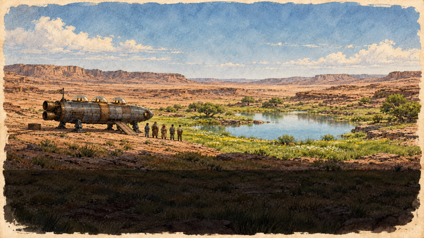
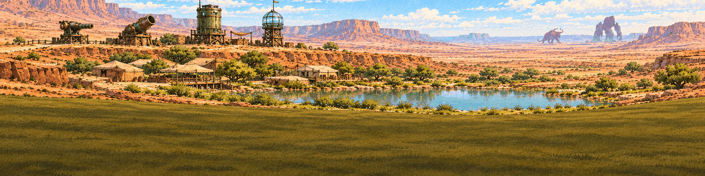
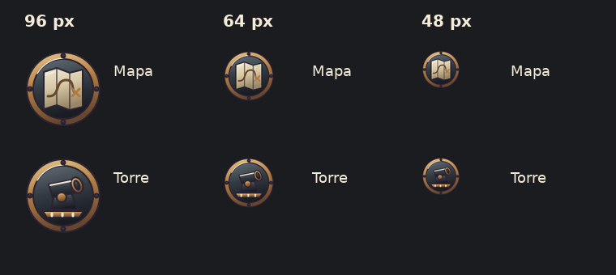
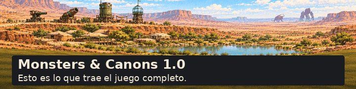
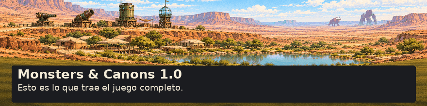
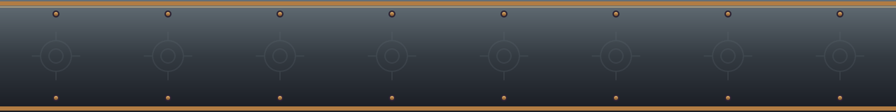
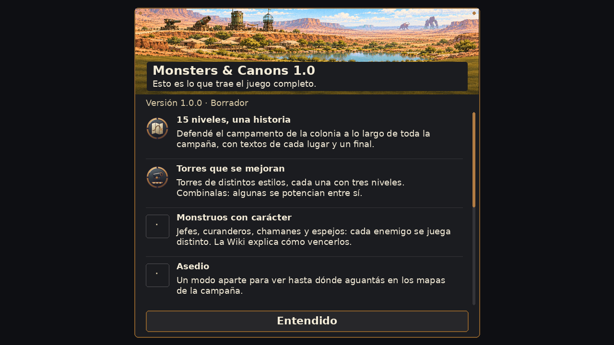
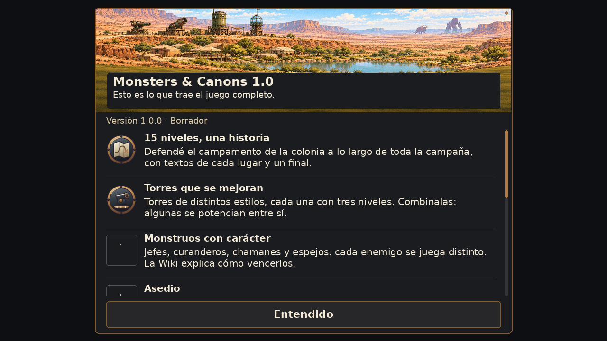
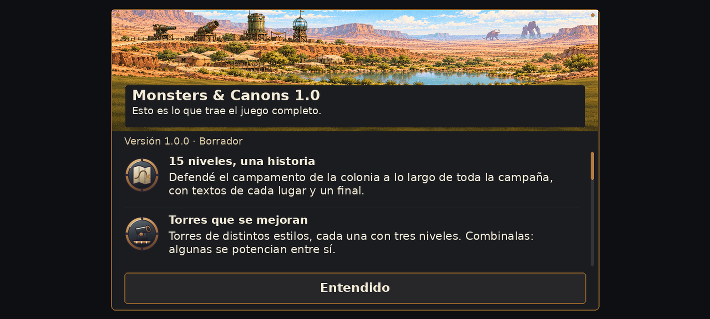
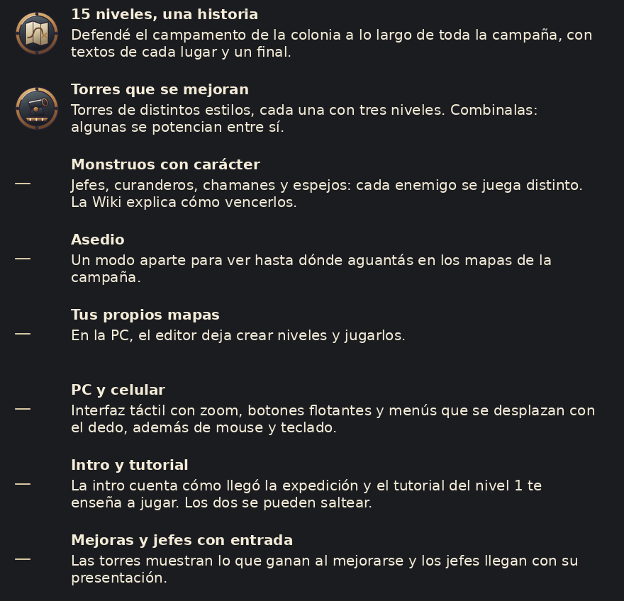

Dos cabeceras y dos íconos. Muestras sin aprobar ni integrar. Los otros seis íconos esperan el OK al estilo y la lista final (P-67-1/P-67-6). Los textos son el borrador literal de M67. Abrí esta hoja al 100 % de zoom: las imágenes conservan sus píxeles CSS; si falta ancho, desplazá el contenedor.
Alcance y límites · Prompts y fuentes · Medidas y pesos


96 px de archivo, 64 px en celular y 48 px en PC. Mismo fondo de hierro del menú.

El contorno punteado marca el 40 % inferior reservado. El soporte oscuro de las siguientes vistas pertenece a la maqueta, no al PNG.


Original 1280 × 160. Extremos idénticos, patrón de 160 px. Debajo, repetición a 1600 px; sin texto dentro del archivo.

Alterná entre principio y final de la lista. Esta comparación de imágenes no prueba el desplazamiento del juego. En seis filas hay reservas vacías para íconos todavía no producidos.



2400 × 1080 no tiene la misma proporción que 1280 × 720. Para mostrar 1,875× sin deformación, la vista real usa 1280 × 576 lógicos: el área desplazable queda más baja. No es una captura de Android.

| Archivo | Píxeles | Bytes PNG |
|---|---|---|
| news_header_1_0.png | 1280 × 320 | 282,603 |
| news_header_plain.png | 1280 × 160 | 4,550 |
| news_icon_map.png | 96 × 96 | 10,150 |
| news_icon_tower.png | 96 × 96 | 10,136 |
Contraste del título crema con soporte #1b1c20: 14.46:1. Subtítulo #d7c8a5: 10.29:1. Sobre la ilustración sin soporte no se garantiza contraste suficiente; revisar README.
Sin animación ni cambios de lógica. No se importó ni se ejecutó el juego. La importación de peso se verifica en un proyecto Godot aislado.